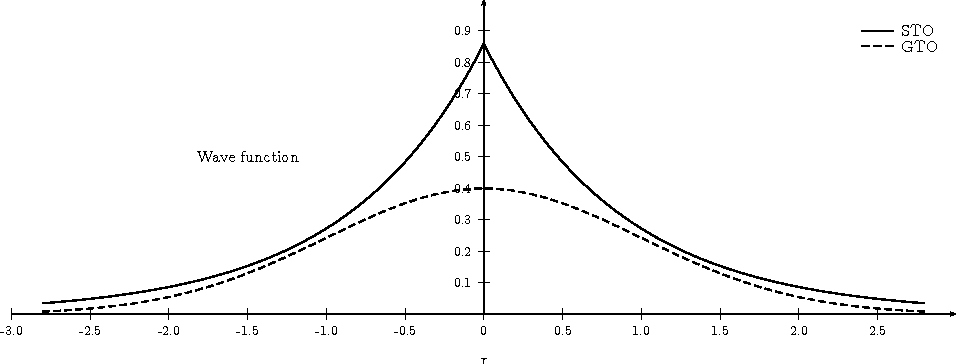
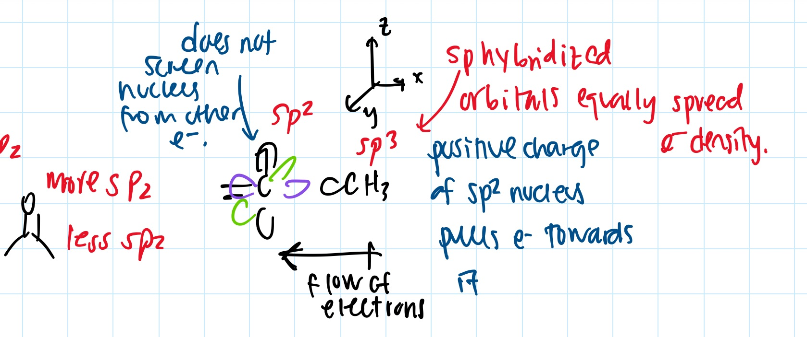
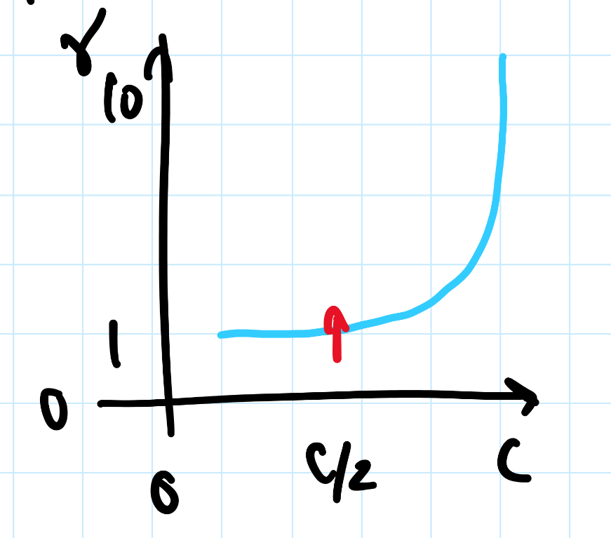
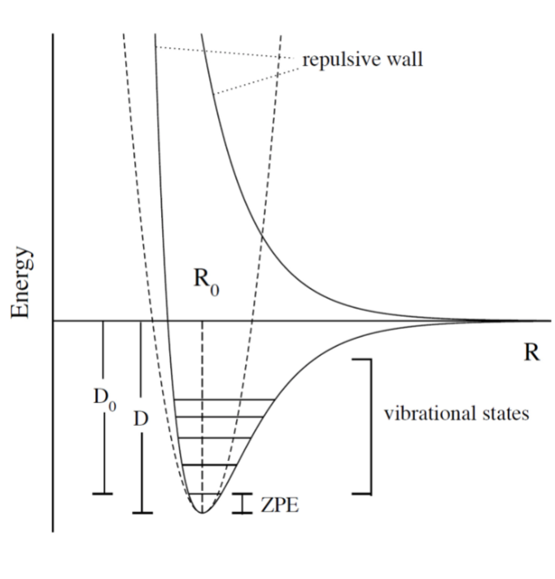
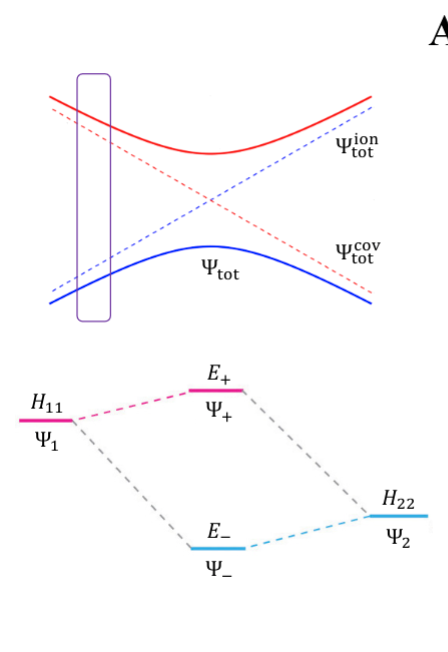
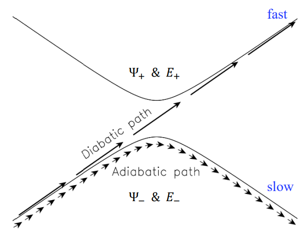
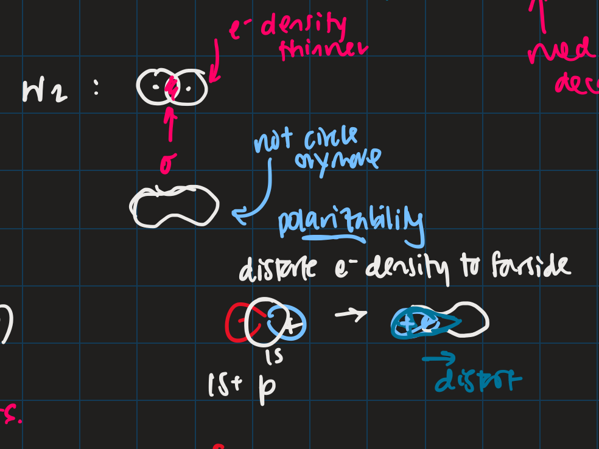

Contents:
- addressing problem set mistakes
- Course Schedule
- Lectures
addressing problem set mistakes
PS1
PS2
PS3
PS4
MT
PS5
PS6
Course Schedule
WebMO and Python tutorials
Review of Quantum Mechanics:
- Schrodinger Eq. ✅
- Relativity, Fermion and boson, Pauli exclusion principle ✅
- Hermitian operator ✅
- Dirac notation, basis set expansion, superposition of states ✅
- Matrix mechanics ✅
Molecular Orbital Theory:
- Born-Oppenheimer approximation, Nuclear and electronic Hamiltonians ✅
- Atomic units, Potential energy surface (PES), Reaction coordinates, Transition states ✅
- Basis sets ✅
- H2+ , Two-state model ✅
- Electronic wavefunctions, Slater determinant ✅
Angular momentum:
- Electron spin, Orbital angular momentum ✅
Group Theory:
- Molecular symmetry, Point groups, Irreducible representations
- Construction of SALCs, Group theory, Character table
Hartree-Fock Molecular Orbital Theory:
- Variational theorem
- H2, Hartree-Fock method
- Self-consistent-field Koopmans theorem,
- Semi-empirical (H ̈uckel), Molecular mechanics
Electron Correlation:
- H2 dissociation problem, Configuration interaction, Coupled-cluster methods
- Perturbation theory
- Møller-Plesset perturbation theory
- Method comparison, Accuracies, Convergence issues
Density Functional Theory:
- Hohenberg-Kohn theorems, Kohn-Sham method
Lectures
2 Python and QM Intro
- slater vs. gaussian

- gaussian decays too quickly and has longer tails
- ill behaving because decays too fast
- near nuclei (at origin), is flat, differential is 0
- slater is proper function to use
- not differentiable because of cusp (at origin)
- predict different behaviour at nuclei (experimentally by EPR)
- should anticipate some mistakes
- gaussian decays too quickly and has longer tails
- review 6 ways non-differentiability
notes on relativistic effects
- special relativity: laws of motion for non-accelerating bodies travelling at speed of light
- as speed approach 0, special relativity tends towrds eq with newton’s laws of motion
- general relativity: laws of motion viewed from accelerating reference frames (geometric explanation for gravity)
- special relativity:
- postulates
- impossible to transmit information faster than speed of light
- laws of physics are identical, without any variation, in every location in universe, no matter how fast travelling
- consequences: time dilation (observer in one reference frame observes clock in another frame to be ticking more slowly than in observer’s own frame), length contradiction (same analogy but with length), and as a body moves with increasing velocity its mass increases: t = γt0, 𝓁 = γ𝓁0, m = γm0
- this follows E = mc2, E2 = p2c2 + (m0c2)2
- postulates
- combining relativity and quantum theory
- energy “uncertainty” (QM) mass-energy equivalence (special relativity) → particle/anti-particle pairs by quantum fluctuations
- klein-gordon equation (relativistic version of Schrodinger equation for spin-0 particle) (using time-dependent Schrodinger equation) $$\begin{align*} E &= \frac{p^2}{2m} \\ i\hbar \frac{\partial}{\partial t}\psi &= - \frac{h^2}{2m} \nabla \psi \\ (i\hbar \frac{\partial}{\partial t})^2 \psi &= - [(i\hbar \nabla)^2c^2 +m_0^2c^4] \psi \\ \frac{1}{c^2}\frac{\partial^2}{\partial t^2} \psi - \nabla^2 \psi + \frac{m^2_0c^2}{\hbar^2} \psi &= 0 \\ \end{align*}$$ this is the d’Alembert operator (???)
- dirac equation:
- electron is spin 1/2 particle (fermion) $$ih\frac{\partial \psi(X, t)}{\partial t} = (c\sum_{k=1}^{3} \alpha_k p_k + \beta mc^2) \psi(x,t)$$ factorized using d’Alembert operator $$\psi(x,t) = \begin{pmatrix} \psi_1(x,t) \\ \psi_2(x,t) \\ \psi_3(x,t) \\ \psi_4(x,t) \\ \end{pmatrix} $$
- wavefunctions 1/2 are for particle and 3/4 are for antiparticle (each wavefunction is either spin-up or spin-down)
- we get gamma (dirac) matrices and pauli matrices
- Taylor expansion → power series a0 + a1x + a2x2 + etc
- different powers of x form basis set
- chem312: ψ(x) = ∑Cnψn
- minimal basis set is least accurate
- spin multiplicity: 2s+1 (review term symbols)
- 1 e, s = 1/2
- 0 single electrons, s = 0, 2s+1 = 1
- open shell singlet: 1/2, -1/2
- open shell triplet: 1/2, 1/2
- closed shell triplet is not possible (Pauli exclusion principle)
- hybridization changes electronegativity
- https://web.ics.purdue.edu/~loudonm/pdf/Supplement_04.01.pdf
- sp more electronegative than sp2 more electronegative than sp3
- this causes dipole moments: arrow goes + to -
- sp2 has electron in the 2p orbital, which the electron density of 2p is not evenly distributed around nucleus in all directions 
- sp3 by contrast, the electron density is evenly distributed in the hybrid orbitals
- geometry sequence energies: tries to find a derivative of 0 to minimize nuclear repulsion energy
- derivative is indication of force
- basis functions: relate to the orbitals, stay the same for each bond distance the program tries
- molecular energy vs. geometry optimization: ME is more optimized because geometry optimization doesn’t take derivative to 0, only closely
ĤΨ = EΨ, where the Hamiltonian Ĥ = T̂ + V̂
- by substituting classical momentum with its quantum form: $$\hat{T} = -\frac{\hbar ^2}{2m}\nabla^2$$
- potential operator V̂ if function of position r and time t.
- don’t care about gravity because it is too small
- Coulombic interaction: $$\hat{V} = - \frac{1}{4\pi\epsilon} \frac{e^2}{r}$$
- |Ψ|2: charge density, gives information about dipole moment and chemical reactivity
- PES: energy, E, an eigenvalue. potential energy surface
- give you information about stable molecular structures/chemical reactivity
3 Relativity, Boson, Fermion

relativity causes
- intrinsic spin
- pauli exclusion principle, linked with electronic spin
- spin-orbit coupling
- orbital motions create magnetic fields -> solved by perturbation theory
noone can travel faster than the speed of light: |v| ≤ c
- $$0 \leq \frac{|v|}{c} \leq 1$$
- lorentz factor: $$\gamma = \frac{1}{\sqrt{1 - (\frac{v}{c})^2}}$$
length contraction:
- only happens in dimension of velocity
- the faster the object moves, the shorter the object becomes
- subjective: depends on how fast the observer is moving
mass increase:
- mass in motion appears more massive
- at speed of light can’t move anymore (so massive)
- the faster it moves, the more massive it becomes
time dilation:
- things that have short half life: live forever when moving at speed of light
core electrons: more stable
- s,p orbitals contract in size
- screen the nuclear charge
- smaller in size means lower energy, denser electron cloud
- move faster??
- heavier so more kinetic energy?
- p, d orbitals larger because feel less nuclear charge
- http://alchemy.cchem.berkeley.edu/inorganic/RelativisticEffects.pdf
fermion: half integer spin
- electron, neutron, proton, quark
- even number of fermion is boson, odd number of fermion is fermion
- spin in half units of ℏ
boson: integer spin
- spin in integral units of ℏ
Pauli Exclusion Principle
- electrons in an atom: no two electrons can have the same quantum numbers
- molecules: only two electrons can occupy a molecular orbital, with opposite spins
- for two identical fermions, total wavefunction is antisymmetric
4 Postulates in QM
- well behaved wavefunction describes the state of the system
- phase factor Ψei0
- function must constrain to physical world
- any observable A, has Hermitian operator Â
- Hermitian operators are self-adjoint
- time dependent Schrodinger equation
- we use time independent equation (time is e−iEt/ℏ)
5 Dirac notation, basis set expansion, superposition of states
dirac notation
- adjoint: ⟨f|Â=⟨†f|
- conjugate transpose
- Hermitian:  = †
- side note: transpose of $$\frac{\partial}{\partial x}$$ is not naively simple!
- expansion of state
- complete set, k goes to infinity
closure
- how to use closure for orthonormal complete set
Ĉ = Σk = 1inf|k⟩⟨k| = 1
- use like an operator
- eigenfunctions of any Hermitian operator form orthonormal complete set
- {ψk(k=1,2,3,..,)} with ⟨ψi|ψj⟩ = δij
- since closure is equal to 1, any state |Ψ⟩ can be expanded as linear combination using complete set
LCAO: how does it differ from
- basis set is non-orthogonal, finite, on different nuclei
- accuracy depends on basis set used
6 Matrix mechanics
- determinant: det(AT) = det(A)
- m rows, n columns
- matrix mechanics:
- with a complete basis set (how would you represent with matrices)
- bra: row vector
- ket: column vector
- ⟨Ψ|†=(c1*,c2*,c3*,...)†=|Ψ⟩
- |Ψ⟩†=⟨Ψ|
- orthonormal basis set (δij):
- non orthogonal basis set (⟨ψi|ψj⟩ = Sij ≠ δij)
- overlap matrix = S
- S = S†
- with a complete basis set (how would you represent with matrices)
- operator with basis set ⟨ψi|Âψj|⟩
- adjoint † with basis set
- euclidean 3D vector space vs. Hilbert nD metric space
6 matrix mechanics
7
8
9
- notes from paper and ipad notes summary
bonding between 2 different atomic orbitals on 2 different atoms
$$\Psi_{bonding} = \begin{pmatrix} 1 \\ \alpha_1 \end{pmatrix}$$ $$\Psi_{antibonding} = \begin{pmatrix} -\alpha_2 \\ 1 \end{pmatrix}$$
- α1 ≠ α2: this means the interaction creates to MOs of two different energy differences
α2 > α1 > 0
- there is more destabilization vs. stabilization
- the lower energy atomic orbital is the one that is more electronegative, why? because holds electrons more close to the nucleus, less separation between negative and positive charges
- with ϵn = AO energy, when far apart, E1 → ϵ1 and Ψ → ψ
- as the difference between two atomic orbital energies increase, bonding interactions decrease, why? mathematically: $$E_1 = \epsilon_1 - \frac{\epsilon_2 - \epsilon_1}{2(1 - S^2_{12})}(\sqrt{1 + 4\alpha_1\alpha_2} - 1 - 2\alpha_1S_{12})$$, so when the difference between ϵ2 − ϵ1 is very large, then there is no bonding.
- the chemical result we can get from this is that: AOs close to each other feel bonding interaction and are affected, AOs with different energy levels remain non-interacting
- this is why we only get certain types of mixing/hybridization: the AO energies must be close enough
- atomic orbitals contribute unevenly to MOs: antibonding is destabilized slightly more than stabilized
molecular hamiltonian
- hamiltonian is total energy operator
- for a molecule:
- N nuclei: (α=1,2,3,...,N) with (mass Mα, charge Zαe, position Rα)
- n electrons: (i=1,2,..) with (mass me, charge − e, position ri)
- Hamiltonian Ĥ = T̂N + T̂e + V̂NN + V̂ee + V̂Ne
- after applying the (hartree) atomic units, simplified down to:
- nuclear kinetic: $$\hat{T}_N = -\frac{1}{2} \Sigma_\alpha \frac{1}{M_\alpha} \nabla^2_\alpha$$
- electronic kinetic: $$\hat{T}_e = -\frac{1}{2} \Sigma_i \nabla^2_i$$
- nuclear repulsion: $$\hat{V}_{NN} = \Sigma_{\alpha < \beta} \frac{Z_\alpha Z_\beta}{R_{\alpha\beta}}$$
- electronic repulsion: $$\hat{V}_{ee} = \Sigma_{i < j} \frac{1}{r_{ij}}$$
- electron-nuclear attraction: $$\hat{V}_{Ne} = \Sigma_{\alpha, i} \frac{-Z_\alpha}{r_{\alpha i}}$$
- after applying the (hartree) atomic units, simplified down to:
born-oopenheimer approximation
- the nucleus is much much more massive than the electron
- can separate motions of electrons and nucleus
- electrons move with frozen geometry with nuclei fixed in space (what does it mean to move with fixed geometry)
- when nuclei move, take calculations again
- electrons move with frozen geometry with nuclei fixed in space (what does it mean to move with fixed geometry)
- total molecule: $$\hat{H}_{total} = \hat{T}_N + \hat{\textbf{T}}_e + \hat{V}_{NN} + \hat{\textbf{V}}_{ee} + \hat{\textbf{V}}_{Ne}$$
- we get the electronic hamiltonian with fixed nuclear parameters (framework): Ĥe = T̂e + V̂ee + V̂Ne
- Ĥeψk = Ekψk, ψk({ri};{Rα})
- then we get Ψtotal from expanding the basis set of electronic wavefunctions
|Ψtotal({ri},{Rα})⟩ = Σkϕk({Rα})|̇ψk({ri};{Rα})
- ϕ is nuclear, Ψ is electronic
adiabatic and BOA
- resulting BOA is still hard to solve: basis function (i think) $$(\hat{T}_N + E_l + \hat{V}_{NN})\phi_l + \Sigma_k \{ \phi_k \langle |\hat{T}_N |\rangle + \Sigma_{\alpha = 1} \frac{\langle|\hat{P}_\alpha |\rangle \hat{P}_\alpha \phi_k}{M_\alpha}\} $$
- adiabatic: hopping between different electronic states is eliminated: only ϕl stays
- to change quantum state, requires heat (T̂N+El+V̂NN)ϕl + ϕl⟨ψl|T̂N|ψl⟩ = Etotalϕl
- if nuclear framework doesn’t move around, then second term is 0
- to change quantum state, requires heat (T̂N+El+V̂NN)ϕl + ϕl⟨ψl|T̂N|ψl⟩ = Etotalϕl
- that is the BOA: nuclear framework does not move:
(T̂N+El+V̂NN)ϕl = Etotalϕl
- this is RHF energy: restricted hartree fock energy
- electrons move and nucleus does not
- potential energy surface folows from BOA: T̂NN + V({Rα})ϕ({Rα}) = Etotalϕ({Rα})
- there is no kinetic contributioN?
- we need V({Rα}) = El + V̂NN or the curve looks weird, there will be no minimum
- contains all electgronic motions
- nueclei move on PES, because we are shortening the distance between nuclei
- PES gives net forces felt by nuclei due to complex motions/coulomb interactions of electrons
- electrons move so fast, not point to talk about electron motion
- but shrodinger equation coupoles motion between electrons and nueclei
- BOA provides theoretical basis for existance of chemical structures
- BOA drawbacks:
- independent of nuclear masses, PES for isotopes is the same
- this implies electronic statse should be independent of particular isotopes of nuclei
- but different isotopes change electronic structure as non-adibatic coupling terms depend on nuclear mass
- this implies electronic statse should be independent of particular isotopes of nuclei
- independent of nuclear masses, PES for isotopes is the same
10
lecture notes:
- polyatomic DOF: 3N
- the potential energy surface incorporates all types of energy (translational, rotational, vibrational)
- upper PES: repulsive, minimum is attractive representing a bond 
- ZPE (zero point energy): for translational and rotational is 0 energy at 0K. But vibrational:
- $$ZPE = \frac{1}{2} \hbar w$$
- true ground state energy is D0 = D − ZPE
- why minus ZPE? and why is D0 the true GSE?
potential energy surfaces (PES)
- a molecule needs 3N coordinates to describe it
- position (spatial): 3
- rotations: 3 (2 for linear)
- (internal degrees of freedom) vibrational: 3N - (3 + 2 or 3)
- PES is described using these coordinates
- classifications
- ab initio: from first principles
- only need electronics Ĥe: number of electrons and type of nuclei
- empirical: functions constructed from values by fitting calculated properties to experimental data
- Lennard-Jones PES: $$V_{LJ}(R) = V_0 [(\frac{R_0}{R})^12-2(\frac{R_0}{R})^6]$$
- V0 and R0 are well depth and minimum of potential well respectively; determined from IR
- functional form: chemical intuition
- parameters: experimental
- V0 and R0 are well depth and minimum of potential well respectively; determined from IR
- semi-empirical: mixture
- Lennard-Jones PES: $$V_{LJ}(R) = V_0 [(\frac{R_0}{R})^12-2(\frac{R_0}{R})^6]$$
- ab initio: from first principles
- 412: concerned with ab initio
- larger molecules use empirical potentials
- anatomy of PES
- attractive state: has a well representing a bond
- repulsive state: no stable bond, not really a well, like a ball rolling down until reaching dissociation limit
- R → 0: PESs climb to higher energies because of electron cloud repulsion and then more steeply from nuclear repulsive term
- Gaussian finds R0, at the minimum of PES
- matches experimental structure at low vibrational states
- vibrational analysis
- approximations based on harmonic oscillator
- approximated in Taylor series, which we can simplify to parabola
- matches behaviour at the well, but elsewhere does not
- approximation has 5-10% difference from experimental values; even with exact PES using the harmonic approximation will lead to errors
- approximated in Taylor series, which we can simplify to parabola
- approximations based on harmonic oscillator
- how is this done for a PES of p dimensions:
- find stationary point where all first derivatives are 0 (makes taylor series expansion simpler?)
- expand PES in multidimensional Taylor series about stationary point keeping only quadratic term (linear terms 0 because of step 1.)
- form Hessian matrix, where diagonals are pure second derivative and everything else is mixed second derivative.
- diagonalize the Hessian to find new set of coordinates, which are normal modes, qi.
- qi is a linear combination of original {Ri} coordinates.
- in normal mode basis, only pure second derivatives remain. mixed second derivative terms are zero; no coupling between different normal modes. each normal mode is independent of others, so the pure second derivative can be used to define a harmonic oscillator
- p normal modes, p harmonic oscillators
- ZPE is sum of harmonic frequencies multiplied by $$\frac{\hbar}{2}$$
side notes:
- normal modes are uncoupled, unlike bond coordinates; exciting one normal mode doesn’t affect other normal modes
- can use symmetry to simplify calculations regarding normal modes
- must use same method and same basis set to perform vibrational analysis as was used for geo opt; different methods approximate different stationary points
- normal modes used to characterize stationary points (?).
crossing and non-crossing PES
- NaCl: at limit of R goes to infinity; covalent bond does not have minimum, while ionic bond has minimum
- these two graphs cross: PESs obtained with Born-Oppenheimer approximation
- total wavefunction is product of nuclear and electron
- in real system, there are interactions with the two PESs and there is no crossing: avoided crossing point: non-Born-Oppenheimer effect
- total wavefunction is linear combination of ψelectronion and ψelectroncovalent, with some expansion coefficients
- these two graphs cross: PESs obtained with Born-Oppenheimer approximation
reaction paths, transition states and intermediates
- 1D path, single normal mode
- PES for 2D case: TS is saddle point
- perpendicular modes: not along reaction path, bound vibrations
- normal mode frequencies are positive numbers
- important to include ZPE into calculations of energy because of exponential dependence upon ΔEt
- ZPE only uses positive normal mode frequencies
diabatic and adiabatic processes
- adiabatic theorem: QM system subject to gradually changing systems can adapt it’s functional form
- diabatic: rapidly changing conditions prevent system from adapting its configuration, so probability density remains unchanged? no eigenstate of final Hamiltonian with same functional form; system ends in linear combination of stats that sum to reproduce initial probability density
- adiabatic: gradually changing allow system to adapt configuration, probability density is modified. starts in eigenstate of initial Hamiltonian and ends in eigenstate of final Hamiltonian.
11
- ZPE (zero point energy): for translational and rotational is 0 energy at 0K. But vibrational:
- $$ZPE = \frac{1}{2} \hbar w$$
- true ground state energy is D0 = D − ZPE
- why minus ZPE? and why is D0 the true GSE?
- ZPE is always bigger than 0
- D0 represents energy to break a bond, enthaply required to break a bond:
- AB → A + B
- ΔH = (H(A)+H(B)−H(A−B)) = (Ediss+EdissZPE) − (Ebond+EbondZPE) = − (Ebond−EbondZPE)
- why minus ZPE? and why is D0 the true GSE?
- frequencies: positive represents stationary state (minimum), negative represent transition state (maximum)
- for a true transition state, you can either go back or to the final product, so there will be only one negative (or imaginary) frequency
- negative frequencies not included in ZPE
- for a true transition state, you can either go back or to the final product, so there will be only one negative (or imaginary) frequency
- Morse vs. Harmonic: at higher quantum states, the differences are too large, harmonic is less accurate
PES interactions
- BOA: predicts crossing (why?) because the equatio is single product?
- single product may break down and not correctly describe total wavefunction
- what does it mean to be fixed by ZPE?
- contradicts the existance of sodium ions and elemental sodium
- non BOA: avoided crossing Ψtotal = cionΨtotalionccovΨtotalcov

- from the hamiltonian matrix, if $$$H_{12} = 0$, then PES crossing happens with no problem - this happens when $$Ψ1andΨ2$$ are different spins or point groups
adiabatic and nondiabetic processes

- fast: mixed states on upper and lower PESs
- Ψd = c+Ψ+ + c−Ψ−
- Ed = |c+|2E+ + |c−|2E−
- slow: process ends up in pure state in lower PES
- Ψa = Ψ−
- Ea = E−
quiz questions
- breaking bonds fast or slow means changing the motion of the nuclei fast or slow
- fast bond breaking by shooting strong, intense laser
- vibrational frequencies: at TS only one vib freq is imaginary (or negative)
- PES crossing: depends on the interaction energy, represented by H12
12
- STO orbitals: mimic nodeless radial components of H-like orbitals
- χlmSTO = Nrle−lrYlm(θ,ψ)
- GTO orbitals: approximate nodeless radial components of H-like orbitals
- χlmGTO = Nrle−lr2Ylm(θ,ψ)
- can convert Ylm in GTO to cartesian coordinate, no more complex numbers (i think)
- for matrix calculations, GTO is more stable, and easier to calculate
- how to approximate different types of bonding:
- non polar covalent: can use neutral H-like orbitals
- polar covalent: cation-like behaviour, electron cloud is thinner, neutral H-like orbitals decay too slowly
- ionic: cation-like behaviour, electron cloud is thinner, neutral H-like orbitals decay too slowly
- hydrogen bonding: extended range intermolecular forces, neutral H-like orbitals decay too quickly
- polarization
- H2 bonding is not just two s-orbitals overlapping, more like a peanut shape
- usually use orbital with + 1 angular momentum

- CGTOs: linear expansion of PGTOs
- χkCGTO = Σa = 1nccakχaPGTO
- types of basis sets:
- minimal: one GTO/CGTO per AO
- double-zeta: 2 basis function per AO
- triple-zeta: 3 basis function per AO
- split-valence: minimal basis for core atomic orbitals, larger basis for valence atomic orbitals
- common GTO basis sets
- representation: {core minimal} - {valence} {++} G {nd,p}
- {core minimal}: if this is a number, represents the number of PGTOs used to represent the core electrons (is this n PGTOs for all AOs that are core?)
- {valence}: the zeta of PGTOs that make up the CGTOs for valence electron AOs
- {++}: one plus means diffuse function for heavy atom, two plus mean diffuse function for heavy atom and hydrogen
- {nd, p}: polarization functions, nd for heavy atoms, p for hydrogen
- representation: {core minimal} - {valence} {++} G {nd,p}
- basis set size vs. computation time: O(n4)$
- BSSE: for relative energies, same method/basis set must be used for all calculations, or BSSE can arise with accessible basis sets differ in 2 calculations.
- diffuse: long-range, polarization: bonding
different basis set
| GTO | Quality | Row-1 | Row-2 | Row 3 | Interpretation |
|---|---|---|---|---|---|
| STO-3G | minimal | (3s) → [1s] | (6s,3p) → [2s,1p] | (9s, 6p) → [3s, 2p] | 3 PGTOs for 1 CGTO, 1 CGTO per 1 AO |
| 3-21G | basic | (3s) → [2s] | (6s, 3p) → [3s,2p] | (9s, 6p) → [4s, 3p] | |
| 6-311+G(2d,p) | accurate | (5s, 1p) → [3s, 1p] | (12s, 6p, 2d) → [5s, 4p, 2d] | (14s, 11p, 2d) → [7s, 6p, 2d] |
basis sets
- spatial part of spin orbital expressed as linear combination of atomic orbitals
- natural expand MOs in terms of AOs
- hydrogen-like atomic orbitals (time consuming)
- ab initio MO theory: Slater-type orbitals (STOs) or Gaussian-type (GTOs) are used as basis sets
hydrogen-like atomic orbitals
- solution of following equation: $$(-\frac{1}{2}\nabla^2 - \frac{Z}{r}) \psi(r) = E \psi (r)$$
- in spherical coordinates: ψnlm(r,θ,ρ) = Rnl(r)Ylm(θ,ρ)
- slater-type orbitals: expressed in spherical coordinate system
- χnlmSTO = NYlm(θ,ρ)rn − 1e−ζr
- exponential decay at long range, Kato’s cusp condition at short range, no radial nodes
- not convenient numerically: integral evaluation over STOs done numerically (why does this introduce error)
- Kato’s cusp condition: electron density has cusp at position of nuclei
- gaussian-type orbital (also in spherical coordinate system):
- χnlmSTO = NYlm(θ,ρ)r2n − 2 − le−ζr2
- can be evaluated with analytical formulae (Gaussian Product Theorem): product of two GTOs centered on different atoms is finite sum of Gaussian functions centered on point along axis connecting them: saves time and elimiates error in determining matrix elements
- incorrect physical behaviour of GTOs: decays much faster for large r.
- do not satisfy Kato’s kusp condition
- instead use contracted sets (CGTOs) of primitive GTOs (PGTOs) normally used: $$\chi^{CGTO} = \sum^k_i a_i \chi^{PGTO}_i$$
- for STO-3G: three PGTOs form each CGTO to mimic one STO
comments:
- core orbitals contribute most of overall energy but least to chemical bonding, valance orbitals most important chemically but contribute little to overall energy
- basis functions constructed in a way to describe valence orbitals energies better than core orbitals
- absolute energies quite off, but relative energies are accurate
- need to use same method and basis set for all calculations
- basis set superposition error: accessible basis sets different in two calculations
- when two calculations have different basis function space, the calculation with larger basis function space will
- add ghost molecules to account for BSSE (CP method)
- present in almost all calculations
- when two calculations have different basis function space, the calculation with larger basis function space will
more on basis sets (additional)
- expanding MO in set of known functions is not an approximation if basis set is complete (infinite)
- unknown MO is function in infinite coordinate system spanned by complete basis set
- finite basis: only components along coordinate axes corresponding to basis set is represented
- smaller the basis, the worse the accuracy, the better a single basis function is, the fewer basis functions are needed
- computational scaling: M4
slater and gaussian type orbitals (type of AO)
- STOs (polar coordinates):
- no radial nodes
- introduced through linear combinations
- exponential dependence:
- mirrors exact orbitals for hydrogen
- fairly rapid convergence
- used for atomic/diatomic systems where high accuracy desired
- no radial nodes
- GTOs (polar or cartesian):
- sum of lx, ly, lz determines type of orbital
- there are different number of components for spherical functions (6 for d) and 5 for d in cartesian coordinates
- can transform cartesian components to spherical functions
- use of only spherical components reduces problems of linear dependence for large basis set
- r2 makes GTO inferior to STO in two ways:
- at nucleus, GTO have zero slope, when STO has cusp, so GTOs have problems representing behaviour near nucleus
- GTO falls off too rapidly far from nucleus compared with STO, and tail of wave function is represented poorly
- because GTO is less accurate, when making basis sets, more GTOs must be used to achieve same level of accuracy that can be achieved with less STOs (3 GTOs per STO)
- but computational of integral of GTOs is easier
- GTOs preferred for computationally efficiency
- most applications take GTOs to be centred at nuclei
- for some calculations: centre of basis function may not be center of nucleus
- most applications take GTOs to be centred at nuclei
- STOs (polar coordinates):
classification of basis sets
- how many functions to be used?
- minimum basis set: only enough functions to contain all electrons of neutral atom
- H to He: single s-function
- Li to Ne: 1s function, 2s function, 3 2p functions
- Na to Ar: 1s function, 2s function, 3 2p functions, 3s function, 3 3p function
- double zeta: doubling of all basis functions
- demonstrate importance with HCN:
- C-H bond: hydrogen s orbital (H) and pz orbital (C)
- C-N pi bond: px and py orbitals of C and N
- pi bind will have more diffuse electron distribuion than C-H sigma bond
- minimum basis set: comprimize will be made
- DZ: tighter function can enter C-H bond with large coefficient, diffuse function (small exponent) can be used for C-N pi bond
- pi bind will have more diffuse electron distribuion than C-H sigma bond
- split valence basis: only doubles valence orbitals (VDZ)
- demonstrate importance with HCN:
- triple zeta: tripling of all basis functions, also triple split valence basis set
- higher angular momentum functions -> polarization functions, also important
- electron distribution along bond is different than perpendicular to bond
- for H-C bond, if only s functions are described, then electron density perpendicular cannot be described
- add set of p-orbital functions to H, then pz component can be used to describe perpendicular electron density
- p-orbital introduces polarization of s-orbitals
- add set of p-orbital functions to H, then pz component can be used to describe perpendicular electron density
- for single determinant wave function: first set of polarization functions is most important
- electron correlation: energy lowering by electrons “avoiding” each other
- “in-out”: radial correlation, one electron is close to and the other, far from nucleus
- wavefunctions with different exponents
- “angular correlation”: two electrons on opposite side of nucleus
- same magnitude exponents but different angular momenta
- “in-out”: radial correlation, one electron is close to and the other, far from nucleus
- adding single set of polarization functions (p-functions on hydrogen, d-functions on heavy atoms): double zeta plys polarization
- basis set balance: having too many polarization functions vs. small basis set is not good
- mixing of basis sets: minimum basis on spectator ions and DZ on interesting parts
- or polarization functions on important hydrogens -> creates artefacts
- use of small basis sets for systems containing very different numbers of valence electrons may produce artefacts
even and well tempered basis sets
13
14 MO Theory
15 slater determinant for N-Electron wavefunction
- made from orthonormal spin orbitals: {ψaSMO} with ⟨ψa|ψb⟩
- we get N × N matrix, where N is number of electrons,
$$\Psi(1,2,..,N) = \frac{1}{\sqrt{N!}} \begin{vmatrix} \psi_a(1) & .. & \psi_a(N) \\ \psi_c(1) & .. & \psi_c(N) \end{vmatrix}$$
- where rows are orbitals and columns are electrons.
- applying permutation operator (change position of electrons) makes the resulting wavefunction antisymmetric
- properties of determinants:
- interchanging two rows or two columns: rows(move electron to another spin orbital, flipping spin?), columns (moving electron positions) reverses the sign
- equating two rows or columns: putting two electrons as same spin (row) or putting another electron into same orbital as another electron, 0 because not valid
- shorthand
- Ψ(1,2,N) = |ψa(1), ψb(2), ...ψc(N)⟩
- pauli principle: pauli antisymmetric principle and pauli exclusion principle
- properties:
- slater determininant
- normalized
- permutation operator results in asymmetry
- when ψb = ψb meaning same spin: $$\Psi(1,2) = \frac{1}{\sqrt{2}} \begin{vmatrix} \psi_a(1) & \psi_a(2) \\ \psi_a(1) & \psi_a(2) \end{vmatrix} = 0$$
result showing pauli exclusion
16
17 symmetry operations
properties of character tables
- order:
- using unexpanded symmetry elements using the column: h = Σjχj2(E) where j represents the irreducible representations
- using expended symmetry elements (row): h = ΣRχj2(R) where i is a irreducible representation and R is the expanded row of symmetry elements
- dimension of $j$th irreducible representation: lj = χj(E)
direct sum
- a reducible representation (like MOs) is direct sum of irreducible representations Γredu = ΣjajΓj = a1Γ1 ⊕ a2Γ2 ⊕ ...
- where aj is $$\frac{1}{h} \Sigma_{R} \chi_{redu}(R)\chi_j$$ meaning, sum of product of reducible representation with the representation of the symmetry elemental
- where χredu(R) = Σjajχj(R) is a reducible representation can be further reduced
- to find the direct sum of irreducible representations for a reducible representation, find aj for all irreducible representations and see which ones are not 0
- χj(R) is like a wavefunction that returns the eigenvalue
18
direct product
- a direct product can be reduced to terms of the irreducible representation: Γredu = ∏iΓi = Γi ⊗ Γj ⊗ ... = ΣjajΓj
- χredu(R) = ∏iχi(R)
- how do we go from direct sum to direct product?
what does direct sum and direct product mean chemically?
- we want to know when two wavefunctions will be orthogonal
- like frank condon states, we want ⟨Ψi|Â|Ψj⟩
- symmetry gives us selection rules
after finding irreducible representation -> SALCs
- we apply the projection operator for SALCs: P̂j = Σj(R)R̂
- for multi-degenerate states, we must orthogonalize to find the right number of wavefunctions